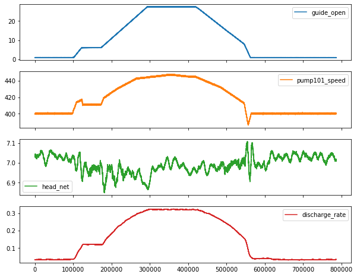
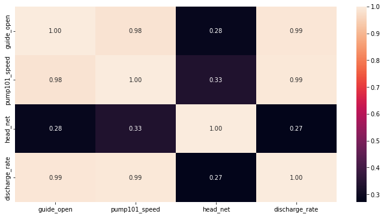
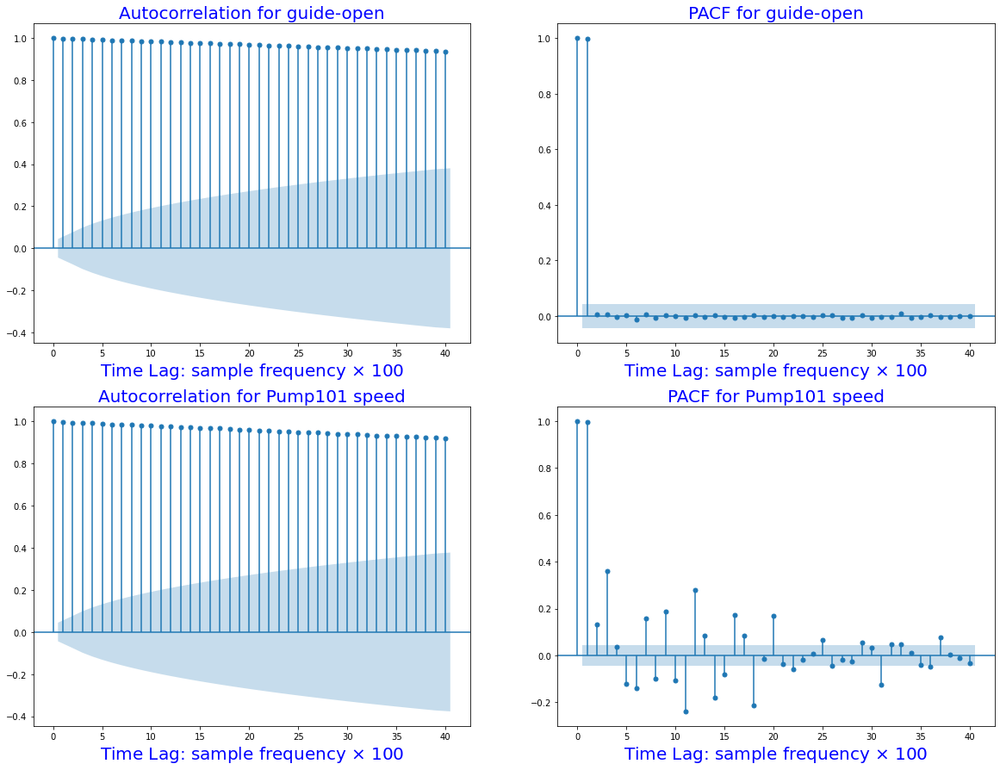
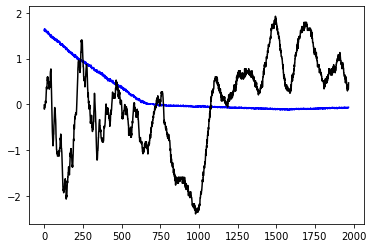
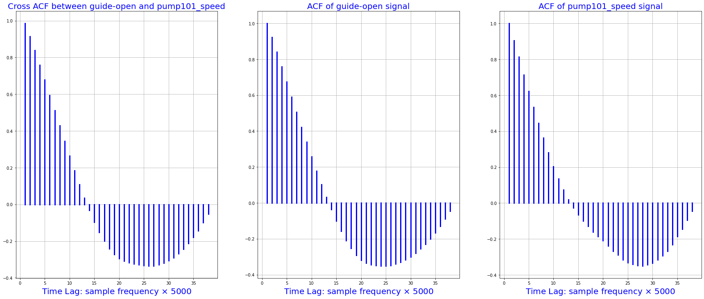
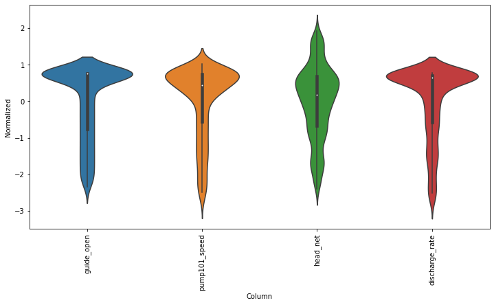

Tensorflow modelling¶
import pandas as pd
import numpy as np
import matplotlib.pyplot as plt
import seaborn as sns
from pandas.plotting import register_matplotlib_converters
# plt.style.use(['science','no-latex'])
# plt.rcParams["font.family"] = "Times New Roman"
%load_ext autoreload
%autoreload 2
import tensorflow as tf
1, Load the data¶
#from tensorflow import keras
#from google.colab import drive
#drive.mount('/content/drive')
#df = pd.read_csv('/content/drive/MyDrive/Data/vattenfall_turbine.csv')
#drive.flush_and_unmount()
#print('NB: Unmount the google cloud driver')
df = pd.read_csv(r'E:\FEM\Python\bitbucket\Vattenfall_rnn\vattenfall_turbine.csv')
keys = df.keys().values
feature_keys = keys[np.arange(1,5).tolist() + np.arange(7,10).tolist()]
time_key = keys[0]
plot_cols = feature_keys[0:len(feature_keys):2]
plot_features = df[plot_cols]
#plot_features.index = df[time_key]
fig1 = plot_features.plot(subplots=True, figsize=(10, 8))
plt.show()
from IPython.display import display, Markdown
#display(Markdown(' <font size="6"><span style="color:blue">**Lets take a close look at the time series.**</span> </font>'))
display(Markdown('<span style="color:blue;font-size:50px">**Lets take a close look at the time series.**</span>'))
plot_features = df[plot_cols][int(len(df)/5):int(len(df)/3):1000]
#plot_features.index = df[time_key][:480]
fig2 = plot_features.plot(subplots=True, figsize=(15, 10))


Lets take a close look at the time series.
2, Preprocessing data: normalize, train, validation, test, etc.¶
2.1, resample the data with low-resolution¶
df_train = df[feature_keys[0:7:2]][int(len(df)/4):int(len(df)/2):100]
display(Markdown('<span style="color:red; font-size:30px">**No. of the values in the training dataset is: %d**</span>' %len(df_train)))
# plot the data and check their variations along time
df_train.plot(subplots=True, figsize=(15, 10))
plt.show()
#print('No. of the values in the training dataset is: %d' %len(df_train))
display(Markdown('<span style="color:blue; font-size:20px">**Plot the heatmap for variation of standard deviation**</span>'))
# check he correlation
import seaborn as sns
plt.figure(figsize=(12, 6))
sns.heatmap(df_train.corr(), annot=True, fmt=".2f")
plt.show()
No. of the values in the training dataset is: 1967

Plot the heatmap for variation of standard deviation
2.2, autocorrelation function (ACF) and (PACF) to check time dependence¶
def autocorr(x):
result = np.correlate(x, x, mode='full')
return result[int(result.size/2):]
acf_open = autocorr(df_train.guide_open)
from statsmodels.graphics.tsaplots import plot_acf
import statsmodels.api as sm
fig, ax = plt.subplots(2,2,figsize=(20,15))
sm.graphics.tsa.plot_acf(df_train.guide_open.squeeze(), lags=40, ax=ax[0,0])
ax[0,0].set_title("Autocorrelation for guide-open", fontsize=20, color='blue')
ax[0,0].set_xlabel(r'Time Lag: sample frequency $\times$ 100', fontsize=20, color='blue')
sm.graphics.tsa.plot_pacf(df_train.guide_open.squeeze(), lags=40, ax=ax[0, 1])
ax[0,1].set_title("PACF for guide-open", fontsize=20, color='blue')
ax[0,1].set_xlabel(r'Time Lag: sample frequency $\times$ 100', fontsize=20, color='blue')
sm.graphics.tsa.plot_acf(df_train.pump101_speed.squeeze(), lags=40, ax=ax[1,0])
ax[1,0].set_title("Autocorrelation for Pump101 speed", fontsize=20, color='blue')
ax[1,0].set_xlabel(r'Time Lag: sample frequency $\times$ 100', fontsize=20, color='blue')
sm.graphics.tsa.plot_pacf(df_train.pump101_speed.squeeze(), lags=40, ax=ax[1,1])
ax[1,1].set_title("PACF for Pump101 speed", fontsize=20, color='blue')
ax[1,1].set_xlabel(r'Time Lag: sample frequency $\times$ 100', fontsize=20, color='blue')
plt.show()

2.3 crossing autocorrelationship for various parameters¶
# NB: we have resampled the data for the autocorreltion analysis
import statsmodels.tsa.stattools as smt
xacf = smt.ccf(df_train.guide_open.squeeze()[0:1900:50], df_train.head_net.squeeze()[0:1900:50], adjusted=False)
acf1 = smt.ccf(df_train.guide_open.squeeze()[0:1900:50], df_train.guide_open.squeeze()[0:1900:50], adjusted=False)
acf2 = smt.ccf(df_train.head_net.squeeze()[0:1900:50], df_train.head_net.squeeze()[0:1900:50], adjusted=False)
fig, [ax1, ax2, ax3] = plt.subplots(1, 3, sharex=True, figsize=(30,12))
i = 1
for p in xacf:
x = [i, i]
ax1.plot([i, i], [0, p], 'b', linewidth=3)
i= i + 1
ax1.grid(True)
ax1.set_title("Cross ACF between guide-open and Head_net", fontsize=20, color='blue')
ax1.set_xlabel(r'Time Lag: sample frequency $\times$ 5000', fontsize=20, color='blue')
i = 1
for p in acf1:
x = [i, i]
ax2.plot([i, i], [0, p], 'b', linewidth=3)
i= i + 1
ax2.grid(True)
ax2.set_title("ACF of guide-open signal", fontsize=20, color='blue')
ax2.set_xlabel(r'Time Lag: sample frequency $\times$ 5000', fontsize=20, color='blue')
i = 1
for p in acf2:
x = [i, i]
ax3.plot([i, i], [0, p], 'b', linewidth=3)
i= i + 1
ax3.grid(True)
ax3.set_title("ACF ofHead_net", fontsize=20, color='blue')
ax4.set_xlabel(r'Time Lag: sample frequency $\times$ 5000', fontsize=20, color='blue')
plt.show()
---------------------------------------------------------------------------
NameError Traceback (most recent call last)
~\AppData\Local\Temp/ipykernel_1688/3112472716.py in <module>
34 ax3.grid(True)
35 ax3.set_title("ACF ofHead_net", fontsize=20, color='blue')
---> 36 ax4.set_xlabel(r'Time Lag: sample frequency $\times$ 5000', fontsize=20, color='blue')
37
38 plt.show()
NameError: name 'ax4' is not defined
# Autocorrelation between guide_opan and pump101_speed
xacf = smt.ccf(df_train.guide_open.squeeze()[0:1900:50], df_train.pump101_speed.squeeze()[0:1900:50], adjusted=False)
acf1 = smt.ccf(df_train.guide_open.squeeze()[0:1900:50], df_train.guide_open.squeeze()[0:1900:50], adjusted=False)
acf2 = smt.ccf(df_train.pump101_speed.squeeze()[0:1900:50], df_train.pump101_speed.squeeze()[0:1900:50], adjusted=False)
fig, [ax1, ax2, ax3] = plt.subplots(1, 3, sharex=True, figsize=(30,12))
i = 1
for p in xacf:
x = [i, i]
ax1.plot([i, i], [0, p], 'b', linewidth=3)
i= i + 1
ax1.grid(True)
ax1.set_title("Cross ACF between guide-open and pump101_speed", fontsize=20, color='blue')
ax1.set_xlabel(r'Time Lag: sample frequency $\times$ 5000', fontsize=20, color='blue')
i = 1
for p in acf1:
x = [i, i]
ax2.plot([i, i], [0, p], 'b', linewidth=3)
i= i + 1
ax2.grid(True)
ax2.set_title("ACF of guide-open signal", fontsize=20, color='blue')
ax2.set_xlabel(r'Time Lag: sample frequency $\times$ 5000', fontsize=20, color='blue')
i = 1
for p in acf2:
x = [i, i]
ax3.plot([i, i], [0, p], 'b', linewidth=3)
i= i + 1
ax3.grid(True)
ax3.set_title("ACF of pump101_speed signal", fontsize=20, color='blue')
ax3.set_xlabel(r'Time Lag: sample frequency $\times$ 5000', fontsize=20, color='blue')
plt.show()

2.3, normalize the data¶
# First, we assume all data are used for the training (the time series is not that stationary for the prediction)
df_train_mean = df_train.mean()
df_train_std = df_train.std()
train_df = (df_train-df_train_mean) / df_train_std
fig2 = train_df.plot(subplots=True,figsize=(15,10))
# Second, plot the standand deviation of features within this dataframe
df_std = train_df.melt(var_name='Column', value_name='Normalized')
plt.figure(figsize=(12, 6))
ax = sns.violinplot(x='Column', y='Normalized', data=df_std)
fig3 = ax.set_xticklabels(train_df.keys(), rotation=90)


# tf.convert_to_tensor(new_df)
new_df = train_df.reset_index(drop=True)
target = new_df.pop('guide_open')
#new_df.head()
target.head()
new_df = tf.convert_to_tensor(new_df)
#normalizer = tf.keras.layers.Normalization(axis=-1)
#normalizer.adapt(numeric_features)
tf.data.Dataset.from_tensor_slices(new_df)
<TensorSliceDataset shapes: (3,), types: tf.float64>
Test the functions of the tf.data.Dataset for slice data to formulate rolling windowed dataset¶
test = tf.data.Dataset.from_tensor_slices(train_df)
train_df.info()
<class 'pandas.core.frame.DataFrame'>
RangeIndex: 1967 entries, 196607 to 393207
Data columns (total 4 columns):
# Column Non-Null Count Dtype
--- ------ -------------- -----
0 guide_open 1967 non-null float64
1 pump101_speed 1967 non-null float64
2 head_net 1967 non-null float64
3 discharge_rate 1967 non-null float64
dtypes: float64(4)
memory usage: 61.6 KB
3, NB: get the rolling/windowed dataset¶
def windowed_dataset(series, window_size, batch_size, shuffle_buffer):
"""Function for creating a windowed dataset for sequence training"""
dataset = tf.data.Dataset.from_tensor_slices(series)
dataset = dataset.window(window_size + 1, shift=1, drop_remainder=True)
dataset = dataset.flat_map(lambda window: window.batch(window_size + 1))
dataset = dataset.shuffle(shuffle_buffer).map(lambda window: (window[:-1], window[-1]))
dataset = dataset.batch(batch_size).prefetch(1)
return dataset
series = np.random.normal(0, 1, 19)
series
array([-0.29050317, 0.11212805, 1.25079512, -1.36088997, 0.09993288,
-0.0479911 , -0.35622969, -1.08855909, -0.3510177 , 2.58839995,
-0.50565079, -0.58430921, -1.27309938, 0.74678304, -0.55834612,
-0.11080156, -1.18733663, -1.00822592, -0.68986173])
data = np.array(train_df.guide_open, dtype=np.float32)
tf.keras.backend.clear_session()
tf.random.set_seed(51)
np.random.seed(51)
shuffle_buffer_size = 3
window_size = 80
batch_size = 150
train_set = windowed_dataset(data, window_size, batch_size, shuffle_buffer_size)
n = 0
for window in train_set:
n = n +1
print(window)
display(Markdown('<span style="color:blue; font-size:20px">The windowed size is: %d, and raw datashape is (%d)</span>'%(n, data.shape[0])))
#(f'The windowed size and raw datashape:{n, data.shape}')
WARNING:tensorflow:AutoGraph could not transform <function windowed_dataset.<locals>.<lambda> at 0x000002588B3D9280> and will run it as-is.
Please report this to the TensorFlow team. When filing the bug, set the verbosity to 10 (on Linux, `export AUTOGRAPH_VERBOSITY=10`) and attach the full output.
Cause: module 'gast' has no attribute 'Index'
To silence this warning, decorate the function with @tf.autograph.experimental.do_not_convert
WARNING: AutoGraph could not transform <function windowed_dataset.<locals>.<lambda> at 0x000002588B3D9280> and will run it as-is.
Please report this to the TensorFlow team. When filing the bug, set the verbosity to 10 (on Linux, `export AUTOGRAPH_VERBOSITY=10`) and attach the full output.
Cause: module 'gast' has no attribute 'Index'
To silence this warning, decorate the function with @tf.autograph.experimental.do_not_convert
(<tf.Tensor: shape=(150, 80), dtype=float32, numpy=
array([[-2.3410695, -2.3477952, -2.3309808, ..., -2.0975974, -2.0834734,
-2.087509 ],
[-2.3329988, -2.3235826, -2.3329988, ..., -2.0807831, -2.0747302,
-2.0733848],
[-2.3477952, -2.3309808, -2.3329988, ..., -2.0834734, -2.087509 ,
-2.0807831],
...,
[-1.8729576, -1.8695947, -1.8716123, ..., -1.6341933, -1.6274676,
-1.6247773],
[-1.867577 , -1.8521076, -1.8568157, ..., -1.6133436, -1.5998919,
-1.6012372],
[-1.8521076, -1.8568157, -1.858161 , ..., -1.5998919, -1.6012372,
-1.5958564]], dtype=float32)>, <tf.Tensor: shape=(150,), dtype=float32, numpy=
array([-2.0807831, -2.071367 , -2.0747302, -2.070022 , -2.0646412,
-2.0706947, -2.0686767, -2.0484996, -2.0471544, -2.0518625,
-2.0733848, -2.0390835, -2.0417738, -2.033703 , -2.0256321,
-2.0249596, -2.020924 , -2.0505173, -2.0404286, -2.0202515,
-2.0189064, -2.0000741, -1.9920033, -2.002092 , -2.0068 ,
-2.016216 , -1.9913307, -2.003437 , -1.9886404, -1.9819145,
-1.9832598, -1.9798969, -1.9778793, -1.9677905, -1.9899855,
-1.9946935, -1.9610648, -1.9651003, -1.9610648, -1.9529939,
-1.9590472, -1.9455956, -1.9496311, -1.9415601, -1.9381973,
-1.9341618, -1.9435779, -1.9139847, -1.9267634, -1.935507 ,
-1.9260908, -1.9139847, -1.9193652, -1.9018782, -1.9079313,
-1.9052411, -1.9126394, -1.908604 , -1.8917897, -1.8837187,
-1.8890992, -1.8884268, -1.8729576, -1.9018782, -1.8729576,
-1.8716123, -1.8695947, -1.8709397, -1.8655592, -1.858161 ,
-1.8521076, -1.858161 , -1.867577 , -1.8379836, -1.8433642,
-1.837311 , -1.8568157, -1.8265499, -1.832603 , -1.837311 ,
-1.8285676, -1.818479 , -1.8211691, -1.8097355, -1.8225144,
-1.8023372, -1.8137709, -1.809063 , -1.8050275, -1.8016646,
-1.7942663, -1.7922485, -1.7734164, -1.7801421, -1.788213 ,
-1.7700535, -1.7713988, -1.7640004, -1.7814873, -1.764673 ,
-1.751894 , -1.7774519, -1.76131 , -1.7465134, -1.7424779,
-1.7384425, -1.7364248, -1.7492038, -1.7357521, -1.7384425,
-1.7364248, -1.7283539, -1.7202829, -1.7182653, -1.7135572,
-1.7142298, -1.7236458, -1.7061589, -1.7068315, -1.7061589,
-1.7014508, -1.6846365, -1.7068315, -1.6812737, -1.6738753,
-1.6765656, -1.6853092, -1.6859815, -1.6584061, -1.6577334,
-1.6563883, -1.6792558, -1.6765656, -1.6604238, -1.6617689,
-1.6510078, -1.6503352, -1.6469723, -1.6368835, -1.6341933,
-1.6200693, -1.6274676, -1.6328481, -1.6254498, -1.6113257,
-1.6247773, -1.6133436, -1.6241047, -1.5958564, -1.5891308],
dtype=float32)>)
(<tf.Tensor: shape=(150, 80), dtype=float32, numpy=
array([[-1.8568157, -1.858161 , -1.8433642, ..., -1.6012372, -1.5958564,
-1.5891308],
[-1.858161 , -1.867577 , -1.8521076, ..., -1.6113257, -1.6133436,
-1.5998919],
[-1.858161 , -1.8433642, -1.8379836, ..., -1.5958564, -1.5891308,
-1.5924937],
...,
[-1.3873581, -1.3833226, -1.3765969, ..., -1.1432129, -1.1391774,
-1.1317792],
[-1.3765969, -1.3772695, -1.377942 , ..., -1.1317792, -1.1364872,
-1.1156373],
[-1.3833226, -1.3765969, -1.3772695, ..., -1.1391774, -1.1317792,
-1.1364872]], dtype=float32)>, <tf.Tensor: shape=(150,), dtype=float32, numpy=
array([-1.5924937, -1.6012372, -1.5857679, -1.5938388, -1.5998919,
-1.5850953, -1.577697 , -1.5803872, -1.5662632, -1.5575197,
-1.5770243, -1.5662632, -1.5568472, -1.5709713, -1.5487763,
-1.5474311, -1.5528117, -1.5467585, -1.5521392, -1.5481037,
-1.5326345, -1.5353247, -1.5245636, -1.5326345, -1.5178378,
-1.5306166, -1.5205281, -1.5050588, -1.5252361, -1.501696 ,
-1.4976605, -1.5164926, -1.506404 , -1.4969879, -1.4929525,
-1.4868993, -1.4714301, -1.4801736, -1.479501 , -1.4774832,
-1.466722 , -1.4855541, -1.452598 , -1.4613415, -1.4539431,
-1.465377 , -1.4478899, -1.462014 , -1.4364561, -1.4425094,
-1.4828639, -1.4418368, -1.4404916, -1.4337659, -1.4189692,
-1.4189692, -1.4250224, -1.4156064, -1.4451996, -1.409553 ,
-1.4075354, -1.4014821, -1.4149338, -1.4055176, -1.3887033,
-1.3873581, -1.395429 , -1.3833226, -1.3940839, -1.3772695,
-1.3873581, -1.377942 , -1.368526 , -1.3611276, -1.3792871,
-1.3597825, -1.3618003, -1.3765969, -1.3402778, -1.3496939,
-1.3456584, -1.341623 , -1.354402 , -1.333552 , -1.3348973,
-1.3362423, -1.3174102, -1.325481 , -1.3274989, -1.3201005,
-1.3140473, -1.306649 , -1.3005959, -1.3564196, -1.3153925,
-1.2972329, -1.298578 , -1.2750379, -1.2864717, -1.285799 ,
-1.2797459, -1.2918524, -1.2662944, -1.2757105, -1.2757105,
-1.258896 , -1.258896 , -1.2541882, -1.2508253, -1.2514977,
-1.2467898, -1.2481349, -1.2420818, -1.2629315, -1.2481349,
-1.2427543, -1.2373737, -1.2232497, -1.2279575, -1.222577 ,
-1.223922 , -1.2138335, -1.2017272, -1.2145061, -1.197019 ,
-1.2091254, -1.1929836, -1.1842402, -1.1916386, -1.197019 ,
-1.1849128, -1.1862578, -1.1694436, -1.1734791, -1.1802047,
-1.1627177, -1.1943288, -1.1586822, -1.1506113, -1.1519566,
-1.1546468, -1.1613727, -1.1445582, -1.1432129, -1.1459033,
-1.1391774, -1.1499388, -1.1364872, -1.1230358, -1.1156373],
dtype=float32)>)
(<tf.Tensor: shape=(150, 80), dtype=float32, numpy=
array([[-1.377942 , -1.368526 , -1.3792871 , ..., -1.1156373 ,
-1.1230358 , -1.121018 ],
[-1.3772695 , -1.377942 , -1.368526 , ..., -1.1364872 ,
-1.1156373 , -1.1230358 ],
[-1.368526 , -1.3792871 , -1.3611276 , ..., -1.1230358 ,
-1.121018 , -1.1163099 ],
...,
[-0.90713876, -0.9010855 , -0.9017581 , ..., -0.6562675 ,
-0.65761274, -0.65155965],
[-0.9010855 , -0.9017581 , -0.89839524, ..., -0.65761274,
-0.65155965, -0.6529047 ],
[-0.89839524, -0.89435977, -0.8923421 , ..., -0.6529047 ,
-0.64416116, -0.6421435 ]], dtype=float32)>, <tf.Tensor: shape=(150,), dtype=float32, numpy=
array([-1.1163099 , -1.121018 , -1.1149648 , -1.1122744 , -1.1015133 ,
-1.1015133 , -1.1317792 , -1.0974778 , -1.0860441 , -1.0934423 ,
-1.1008407 , -1.0826812 , -1.0853714 , -1.079991 , -1.0725926 ,
-1.0914247 , -1.0699022 , -1.0503975 , -1.0584683 , -1.0564507 ,
-1.067212 , -1.0571233 , -1.0571233 , -1.0356008 , -1.0356008 ,
-1.0376186 , -1.053088 , -1.0564507 , -1.0282025 , -1.0282025 ,
-1.0174413 , -1.0335832 , -1.0261847 , -1.019459 , -1.00668 ,
-1.0127332 , -1.0006268 , -1.0187863 , -0.98852044, -1.00668 ,
-0.9851576 , -0.9838124 , -0.9925559 , -0.97708666, -0.9764141 ,
-0.9663255 , -0.98986566, -0.96834314, -0.9663255 , -0.957582 ,
-0.9656529 , -0.95085627, -0.9602722 , -0.9427853 , -0.96834314,
-0.94614816, -0.94614816, -0.9427853 , -0.93336916, -0.9138645 ,
-0.9152097 , -0.9380773 , -0.9266435 , -0.9138645 , -0.91991776,
-0.9145371 , -0.909829 , -0.90713876, -0.9017581 , -0.9010855 ,
-0.89839524, -0.89435977, -0.8923421 , -0.89435977, -0.88897926,
-0.8809083 , -0.87620026, -0.88023573, -0.87081957, -0.8795631 ,
-0.8661115 , -0.8647665 , -0.8519875 , -0.8580406 , -0.8418989 ,
-0.847952 , -0.86140364, -0.835173 , -0.8445892 , -0.8345004 ,
-0.8331554 , -0.8284473 , -0.8318102 , -0.81768614, -0.81096023,
-0.8163409 , -0.81970376, -0.80154425, -0.8163409 , -0.80019903,
-0.7914555 , -0.8062523 , -0.7914555 , -0.8116328 , -0.78876525,
-0.7988538 , -0.7928007 , -0.7840572 , -0.76320726, -0.76657027,
-0.77598625, -0.75715417, -0.77396864, -0.75715417, -0.7537913 ,
-0.76320726, -0.7403397 , -0.7551365 , -0.73764944, -0.73226875,
-0.7517735 , -0.7363042 , -0.725543 , -0.7363042 , -0.7161269 ,
-0.72621566, -0.7181447 , -0.71410924, -0.6972948 , -0.69864 ,
-0.6966222 , -0.71881735, -0.70065767, -0.6872062 , -0.7094012 ,
-0.699985 , -0.68787867, -0.67173696, -0.6912417 , -0.66635627,
-0.67039174, -0.66635627, -0.6616482 , -0.6562675 , -0.65761274,
-0.6744272 , -0.6596306 , -0.6529047 , -0.64416116, -0.63676286],
dtype=float32)>)
(<tf.Tensor: shape=(150, 80), dtype=float32, numpy=
array([[-0.89435977, -0.90713876, -0.9010855 , ..., -0.6596306 ,
-0.6562675 , -0.65761274],
[-0.89435977, -0.8923421 , -0.8809083 , ..., -0.64416116,
-0.6421435 , -0.63676286],
[-0.8923421 , -0.8809083 , -0.88023573, ..., -0.6421435 ,
-0.63676286, -0.6407983 ],
...,
[-0.4282639 , -0.41884795, -0.420193 , ..., -0.17537487,
-0.18613605, -0.17604747],
[-0.420193 , -0.40875918, -0.4114496 , ..., -0.17604747,
-0.16461352, -0.16932158],
[-0.40875918, -0.4114496 , -0.40674156, ..., -0.16461352,
-0.16932158, -0.15250711]], dtype=float32)>, <tf.Tensor: shape=(150,), dtype=float32, numpy=
array([-0.65155965, -0.6407983 , -0.6327274 , -0.63878065, -0.62398404,
-0.6179307 , -0.6421435 , -0.60582435, -0.61725813, -0.6159131 ,
-0.60716957, -0.61255 , -0.60582435, -0.60246146, -0.5910277 ,
-0.57623106, -0.5957358 , -0.5943906 , -0.5789213 , -0.58362937,
-0.57488585, -0.5789213 , -0.5681601 , -0.55874395, -0.5526907 ,
-0.56210685, -0.55067307, -0.5661423 , -0.55672616, -0.54394734,
-0.56345206, -0.54058427, -0.5358764 , -0.5345312 , -0.51973456,
-0.5230974 , -0.51502645, -0.52377003, -0.5083008 , -0.5116636 ,
-0.5049377 , -0.50762814, -0.5412569 , -0.5015749 , -0.4975394 ,
-0.50224745, -0.48879588, -0.4914863 , -0.47803468, -0.48207015,
-0.4968668 , -0.47332662, -0.48408797, -0.47332662, -0.46861854,
-0.46391067, -0.45583972, -0.45180425, -0.44978645, -0.46323806,
-0.44440576, -0.43835264, -0.44844124, -0.43297198, -0.4289365 ,
-0.42557365, -0.4282639 , -0.4215382 , -0.420193 , -0.41884795,
-0.4114496 , -0.4403703 , -0.397998 , -0.40875918, -0.40136087,
-0.39261734, -0.40606895, -0.38925448, -0.39530775, -0.40674156,
-0.3663869 , -0.3771481 , -0.37513044, -0.3717674 , -0.3670595 ,
-0.37378523, -0.35697076, -0.35226268, -0.37580287, -0.35226268,
-0.3670595 , -0.34284672, -0.3515901 , -0.3401563 , -0.33813867,
-0.3280499 , -0.33208537, -0.32334185, -0.3421741 , -0.32535964,
-0.310563 , -0.32334185, -0.31459847, -0.30047426, -0.30450973,
-0.29643878, -0.31190804, -0.31930637, -0.29912904, -0.2957662 ,
-0.28635022, -0.2836598 , -0.285005 , -0.26953575, -0.2950936 ,
-0.26146483, -0.28904048, -0.26751795, -0.26213744, -0.26011962,
-0.2641551 , -0.25070348, -0.24868584, -0.2527213 , -0.23523423,
-0.23725204, -0.22783591, -0.24465036, -0.23254398, -0.24801323,
-0.21909237, -0.22918113, -0.2157295 , -0.2137117 , -0.20362312,
-0.21909237, -0.21505691, -0.19958766, -0.17941034, -0.20026027,
-0.18680866, -0.19218934, -0.18277319, -0.22447304, -0.18613605,
-0.17604747, -0.17806512, -0.16461352, -0.15250711, -0.1578878 ],
dtype=float32)>)
(<tf.Tensor: shape=(150, 80), dtype=float32, numpy=
array([[-0.42557365, -0.4289365 , -0.4215382 , ..., -0.18277319,
-0.19218934, -0.17806512],
[-0.4114496 , -0.40674156, -0.397998 , ..., -0.16932158,
-0.15250711, -0.1578878 ],
[-0.40674156, -0.397998 , -0.40136087, ..., -0.15250711,
-0.1578878 , -0.16461352],
...,
[ 0.05800963, 0.06742577, 0.06540813, ..., 0.30753636,
0.30888137, 0.31224424],
[ 0.05397417, 0.05128392, 0.06002745, ..., 0.29946542,
0.31224424, 0.29946542],
[ 0.05128392, 0.06002745, 0.05800963, ..., 0.31224424,
0.29946542, 0.30753636]], dtype=float32)>, <tf.Tensor: shape=(150,), dtype=float32, numpy=
array([-0.17537487, -0.16461352, -0.14914426, -0.14040072, -0.14914426,
-0.13636526, -0.1457814 , -0.16932158, -0.1451088 , -0.13098477,
-0.12627669, -0.12493148, -0.13703787, -0.11282508, -0.11551533,
-0.11013483, -0.10744441, -0.1013913 , -0.10677198, -0.09399298,
-0.09735584, -0.09466559, -0.08659466, -0.08524944, -0.08188658,
-0.06910758, -0.13031216, -0.07852355, -0.06439951, -0.06305429,
-0.08659466, -0.05969144, -0.05431076, -0.04758505, -0.05296573,
-0.04354958, -0.05162051, -0.02942537, -0.02068201, -0.02942537,
-0.03144319, -0.05498337, -0.03144319, -0.03884151, -0.02068201,
-0.01126587, -0.00924805, -0.01328351, -0.00050451, -0.00050451,
-0.00184973, -0.00992065, 0.01025667, 0.01294692, 0.02303567,
0.02774374, -0.0072304 , 0.01630977, 0.02841635, 0.0317792 ,
0.03312424, 0.03783231, 0.04052274, 0.0438856 , 0.0317792 ,
0.05397417, 0.05128392, 0.06002745, 0.05195653, 0.05800963,
0.06540813, 0.0694436 , 0.07146124, 0.06742577, 0.07818713,
0.08962092, 0.07751453, 0.08424024, 0.10374495, 0.10105471,
0.07751453, 0.09096596, 0.08625806, 0.11786917, 0.10778042,
0.1138337 , 0.11047085, 0.10441756, 0.12459488, 0.13132077,
0.12459488, 0.13333842, 0.1393917 , 0.12190463, 0.14880785,
0.13670127, 0.14477238, 0.15082549, 0.15687877, 0.15418835,
0.1649497 , 0.16293189, 0.16629474, 0.15956903, 0.1824366 ,
0.18647206, 0.1703302 , 0.19656081, 0.1898351 , 0.18109156,
0.19185273, 0.19857864, 0.20194149, 0.20463175, 0.21001242,
0.2079946 , 0.21606553, 0.17571089, 0.22749949, 0.22279142,
0.22548167, 0.21673813, 0.2342252 , 0.22884452, 0.24229613,
0.24767682, 0.23624302, 0.24700421, 0.25642034, 0.2665089 ,
0.24498639, 0.258438 , 0.25238487, 0.26852673, 0.2846686 ,
0.27659768, 0.28130573, 0.26987195, 0.2907219 , 0.28063312,
0.28937668, 0.29408473, 0.29946542, 0.28937668, 0.31224424,
0.29946542, 0.31224424, 0.31695232, 0.30753636, 0.30888137],
dtype=float32)>)
(<tf.Tensor: shape=(150, 80), dtype=float32, numpy=
array([[0.06540813, 0.0694436 , 0.07751453, ..., 0.31224424, 0.31695232,
0.31829754],
[0.07751453, 0.07146124, 0.07818713, ..., 0.31829754, 0.3162799 ,
0.32704106],
[0.0694436 , 0.07751453, 0.07146124, ..., 0.31695232, 0.31829754,
0.3162799 ],
...,
[0.52814204, 0.54428405, 0.5456291 , ..., 0.7662352 , 0.75412875,
0.7642175 ],
[0.5456291 , 0.54764694, 0.5483195 , ..., 0.75211096, 0.76488996,
0.76825297],
[0.54764694, 0.5483195 , 0.55437267, ..., 0.76488996, 0.76825297,
0.7621997 ]], dtype=float32)>, <tf.Tensor: shape=(150,), dtype=float32, numpy=
array([0.3162799 , 0.33040392, 0.32704106, 0.31829754, 0.3465458 ,
0.32704106, 0.34318292, 0.34587318, 0.34385553, 0.35327166,
0.35865217, 0.36201522, 0.36470544, 0.37613925, 0.37210378,
0.3801747 , 0.3801747 , 0.3855554 , 0.38219252, 0.3936263 ,
0.38421017, 0.35932478, 0.3996796 , 0.39631674, 0.38891825,
0.39833438, 0.40976816, 0.41514885, 0.41851172, 0.41716668,
0.42725524, 0.4306181 , 0.43734398, 0.39766178, 0.43734398,
0.42792785, 0.43532616, 0.44070685, 0.45550367, 0.45348585,
0.44608754, 0.4622294 , 0.42994568, 0.45819393, 0.46761006,
0.46693745, 0.46626484, 0.4830793 , 0.4817341 , 0.49182284,
0.48442453, 0.47971645, 0.49316806, 0.49115026, 0.50594705,
0.5052745 , 0.48980504, 0.5032566 , 0.51872605, 0.514018 ,
0.5126728 , 0.5328501 , 0.52814204, 0.526797 , 0.51065516,
0.52814204, 0.54428405, 0.55302763, 0.5456291 , 0.5456291 ,
0.5483195 , 0.55437267, 0.54764694, 0.5644614 , 0.51738083,
0.55504525, 0.56984204, 0.5584081 , 0.57455015, 0.58194846,
0.57993066, 0.5785856 , 0.5886742 , 0.57455015, 0.5987629 ,
0.5980903 , 0.59472746, 0.59472746, 0.5913646 , 0.6122145 ,
0.6229757 , 0.6155774 , 0.60616124, 0.6229757 , 0.61894023,
0.6263388 , 0.6357547 , 0.629029 , 0.6391178 , 0.64517087,
0.64517087, 0.6411354 , 0.6572772 , 0.66333055, 0.62499356,
0.67072886, 0.66198534, 0.66871125, 0.6666934 , 0.6680386 ,
0.6828352 , 0.67610955, 0.6821628 , 0.6882159 , 0.6861983 ,
0.69090617, 0.6828352 , 0.6989773 , 0.6989773 , 0.70906585,
0.70032233, 0.7225175 , 0.71444654, 0.7245353 , 0.7178094 ,
0.7063756 , 0.7245353 , 0.7406771 , 0.7379869 , 0.72857076,
0.7393319 , 0.7534562 , 0.74874806, 0.7258803 , 0.7642175 ,
0.75480133, 0.756819 , 0.7702706 , 0.76556253, 0.76018184,
0.76690775, 0.7642175 , 0.7662352 , 0.75412875, 0.7642175 ,
0.75211096, 0.76488996, 0.76825297, 0.7621997 , 0.7621997 ],
dtype=float32)>)
(<tf.Tensor: shape=(150, 80), dtype=float32, numpy=
array([[0.5483195 , 0.55437267, 0.5644614 , ..., 0.76825297, 0.7621997 ,
0.7621997 ],
[0.5328501 , 0.5126728 , 0.52814204, ..., 0.7702706 , 0.76556253,
0.76018184],
[0.55437267, 0.5644614 , 0.55504525, ..., 0.7621997 , 0.7621997 ,
0.75950944],
...,
[0.76152706, 0.76488996, 0.76488996, ..., 0.76018184, 0.7702706 ,
0.7608545 ],
[0.76488996, 0.76488996, 0.7581642 , ..., 0.7702706 , 0.7608545 ,
0.76825297],
[0.76488996, 0.7635449 , 0.756819 , ..., 0.76690775, 0.76690775,
0.7702706 ]], dtype=float32)>, <tf.Tensor: shape=(150,), dtype=float32, numpy=
array([0.75950944, 0.75412875, 0.7709432 , 0.76556253, 0.76825297,
0.76825297, 0.7621997 , 0.7709432 , 0.76825297, 0.76825297,
0.7581642 , 0.7621997 , 0.7588368 , 0.7507659 , 0.7588368 ,
0.7581642 , 0.76690775, 0.7662352 , 0.75278354, 0.76892537,
0.7621997 , 0.7608545 , 0.75950944, 0.76892537, 0.76892537,
0.7621997 , 0.755474 , 0.75211096, 0.76152706, 0.76825297,
0.7662352 , 0.76488996, 0.756819 , 0.7621997 , 0.7608545 ,
0.7608545 , 0.76825297, 0.7581642 , 0.76488996, 0.76152706,
0.7662352 , 0.7608545 , 0.7702706 , 0.77228844, 0.7756513 ,
0.76152706, 0.7635449 , 0.7635449 , 0.76825297, 0.77901417,
0.7736335 , 0.7608545 , 0.76690775, 0.77296084, 0.7635449 ,
0.7635449 , 0.756819 , 0.7675804 , 0.756819 , 0.76488996,
0.77430606, 0.7642175 , 0.7608545 , 0.7716158 , 0.7621997 ,
0.76152706, 0.7642175 , 0.76892537, 0.76488996, 0.76488996,
0.75950944, 0.76152706, 0.76018184, 0.7635449 , 0.7581642 ,
0.76825297, 0.7608545 , 0.756819 , 0.7642175 , 0.76152706,
0.7642175 , 0.76488996, 0.76690775, 0.7581642 , 0.7628723 ,
0.756819 , 0.7608545 , 0.76825297, 0.75412875, 0.76152706,
0.76892537, 0.76690775, 0.76018184, 0.769598 , 0.76488996,
0.7608545 , 0.7675804 , 0.7581642 , 0.76018184, 0.7749787 ,
0.75950944, 0.7662352 , 0.7662352 , 0.76690775, 0.7675804 ,
0.7662352 , 0.7621997 , 0.76892537, 0.7702706 , 0.75278354,
0.7628723 , 0.75950944, 0.7534562 , 0.7662352 , 0.76018184,
0.7662352 , 0.7608545 , 0.7581642 , 0.76152706, 0.7675804 ,
0.7749787 , 0.7635449 , 0.7702706 , 0.7675804 , 0.7662352 ,
0.7621997 , 0.7662352 , 0.7534562 , 0.75950944, 0.7608545 ,
0.76690775, 0.7574916 , 0.7702706 , 0.76690775, 0.7628723 ,
0.76892537, 0.7662352 , 0.7635449 , 0.7642175 , 0.77296084,
0.7702706 , 0.75950944, 0.75950944, 0.76556253, 0.76690775,
0.7702706 , 0.76018184, 0.76825297, 0.76018184, 0.76556253],
dtype=float32)>)
(<tf.Tensor: shape=(150, 80), dtype=float32, numpy=
array([[0.76892537, 0.76152706, 0.76488996, ..., 0.76690775, 0.76018184,
0.7702706 ],
[0.76825297, 0.76018184, 0.7635449 , ..., 0.76018184, 0.7642175 ,
0.7716158 ],
[0.76018184, 0.7635449 , 0.7608545 , ..., 0.7642175 , 0.7716158 ,
0.7534562 ],
...,
[0.7702706 , 0.755474 , 0.7642175 , ..., 0.7736335 , 0.7716158 ,
0.76556253],
[0.76892537, 0.7608545 , 0.7702706 , ..., 0.7588368 , 0.76018184,
0.7736335 ],
[0.7642175 , 0.7675804 , 0.77228844, ..., 0.76556253, 0.76556253,
0.76825297]], dtype=float32)>, <tf.Tensor: shape=(150,), dtype=float32, numpy=
array([0.7608545 , 0.7534562 , 0.76892537, 0.7608545 , 0.7581642 ,
0.76825297, 0.7642175 , 0.7716158 , 0.7675804 , 0.76690775,
0.75412875, 0.7675804 , 0.7736335 , 0.7628723 , 0.7628723 ,
0.7642175 , 0.7628723 , 0.7581642 , 0.7621997 , 0.7608545 ,
0.7574916 , 0.7702706 , 0.7702706 , 0.7621997 , 0.7642175 ,
0.7642175 , 0.76825297, 0.76018184, 0.7709432 , 0.76825297,
0.7534562 , 0.7702706 , 0.7588368 , 0.7561464 , 0.7749787 ,
0.7608545 , 0.7642175 , 0.76892537, 0.7702706 , 0.77430606,
0.76892537, 0.7628723 , 0.7702706 , 0.75950944, 0.76018184,
0.77228844, 0.7675804 , 0.7608545 , 0.77430606, 0.76018184,
0.7702706 , 0.7709432 , 0.7642175 , 0.76825297, 0.7621997 ,
0.7769965 , 0.76152706, 0.7621997 , 0.7628723 , 0.7709432 ,
0.76018184, 0.76825297, 0.7675804 , 0.75278354, 0.75950944,
0.76892537, 0.75480133, 0.7621997 , 0.7608545 , 0.7702706 ,
0.755474 , 0.77228844, 0.7635449 , 0.7675804 , 0.76690775,
0.7675804 , 0.7635449 , 0.7642175 , 0.77430606, 0.7642175 ,
0.7736335 , 0.75950944, 0.7662352 , 0.7608545 , 0.76556253,
0.7628723 , 0.75278354, 0.77296084, 0.7662352 , 0.76690775,
0.755474 , 0.7588368 , 0.7716158 , 0.7635449 , 0.7642175 ,
0.76825297, 0.76825297, 0.7628723 , 0.76690775, 0.76892537,
0.769598 , 0.7702706 , 0.75950944, 0.7662352 , 0.76825297,
0.7608545 , 0.7574916 , 0.76690775, 0.7628723 , 0.76152706,
0.7709432 , 0.7642175 , 0.76690775, 0.7662352 , 0.76152706,
0.7608545 , 0.77228844, 0.7608545 , 0.76018184, 0.7642175 ,
0.7608545 , 0.7574916 , 0.76825297, 0.7662352 , 0.76690775,
0.7642175 , 0.76825297, 0.7716158 , 0.76488996, 0.7621997 ,
0.77430606, 0.7702706 , 0.76488996, 0.7635449 , 0.75412875,
0.7561464 , 0.7608545 , 0.76892537, 0.7628723 , 0.7702706 ,
0.76825297, 0.7702706 , 0.7628723 , 0.76018184, 0.77901417,
0.7736335 , 0.7588368 , 0.76556253, 0.7716158 , 0.76556253],
dtype=float32)>)
(<tf.Tensor: shape=(150, 80), dtype=float32, numpy=
array([[0.7608545 , 0.7702706 , 0.755474 , ..., 0.76018184, 0.7736335 ,
0.7716158 ],
[0.7675804 , 0.77228844, 0.7635449 , ..., 0.76556253, 0.76825297,
0.76556253],
[0.77228844, 0.7635449 , 0.7635449 , ..., 0.76825297, 0.76556253,
0.7716158 ],
...,
[0.76690775, 0.76488996, 0.7662352 , ..., 0.7628723 , 0.76892537,
0.7621997 ],
[0.76488996, 0.7662352 , 0.7635449 , ..., 0.76892537, 0.7621997 ,
0.7635449 ],
[0.7635449 , 0.77296084, 0.76825297, ..., 0.7635449 , 0.756819 ,
0.7716158 ]], dtype=float32)>, <tf.Tensor: shape=(150,), dtype=float32, numpy=
array([0.76556253, 0.7716158 , 0.76825297, 0.7642175 , 0.7588368 ,
0.75950944, 0.76825297, 0.769598 , 0.7675804 , 0.7628723 ,
0.76892537, 0.7561464 , 0.76825297, 0.76892537, 0.7635449 ,
0.76690775, 0.7675804 , 0.76556253, 0.75480133, 0.7803594 ,
0.769598 , 0.7621997 , 0.76825297, 0.76488996, 0.7621997 ,
0.7574916 , 0.76488996, 0.76892537, 0.7635449 , 0.76556253,
0.7621997 , 0.76892537, 0.76018184, 0.7675804 , 0.76488996,
0.77834153, 0.7621997 , 0.769598 , 0.7662352 , 0.7642175 ,
0.7662352 , 0.76152706, 0.756819 , 0.7588368 , 0.7716158 ,
0.76152706, 0.7675804 , 0.76556253, 0.75278354, 0.7702706 ,
0.76488996, 0.7628723 , 0.7635449 , 0.7662352 , 0.76556253,
0.76152706, 0.7588368 , 0.75480133, 0.76152706, 0.76825297,
0.75950944, 0.76152706, 0.769598 , 0.76488996, 0.76018184,
0.75950944, 0.76690775, 0.76488996, 0.77228844, 0.7662352 ,
0.7608545 , 0.76825297, 0.7635449 , 0.7642175 , 0.76152706,
0.769598 , 0.77296084, 0.76892537, 0.7642175 , 0.76690775,
0.76556253, 0.7588368 , 0.7662352 , 0.76152706, 0.76018184,
0.7621997 , 0.7635449 , 0.7675804 , 0.7662352 , 0.7642175 ,
0.7662352 , 0.7716158 , 0.7621997 , 0.76892537, 0.7702706 ,
0.76892537, 0.7608545 , 0.7642175 , 0.756819 , 0.76825297,
0.76556253, 0.7635449 , 0.7608545 , 0.75412875, 0.7635449 ,
0.7769965 , 0.76018184, 0.7702706 , 0.76488996, 0.7702706 ,
0.7635449 , 0.77430606, 0.76488996, 0.7635449 , 0.76488996,
0.77296084, 0.7662352 , 0.76892537, 0.7621997 , 0.7702706 ,
0.7662352 , 0.76152706, 0.7635449 , 0.76892537, 0.7709432 ,
0.7608545 , 0.7574916 , 0.7628723 , 0.755474 , 0.76690775,
0.76018184, 0.769598 , 0.76488996, 0.7621997 , 0.7621997 ,
0.7662352 , 0.77901417, 0.76825297, 0.7702706 , 0.7749787 ,
0.7642175 , 0.76556253, 0.7621997 , 0.75412875, 0.7662352 ,
0.7628723 , 0.7621997 , 0.7635449 , 0.756819 , 0.7675804 ],
dtype=float32)>)
(<tf.Tensor: shape=(150, 80), dtype=float32, numpy=
array([[0.76018184, 0.7608545 , 0.76690775, ..., 0.76556253, 0.75412875,
0.7628723 ],
[0.76825297, 0.7642175 , 0.76892537, ..., 0.7716158 , 0.7675804 ,
0.7716158 ],
[0.7642175 , 0.76892537, 0.76152706, ..., 0.7675804 , 0.7716158 ,
0.77228844],
...,
[0.769598 , 0.77430606, 0.7621997 , ..., 0.7716158 , 0.7702706 ,
0.76690775],
[0.7702706 , 0.7662352 , 0.7675804 , ..., 0.76892537, 0.76690775,
0.755474 ],
[0.7621997 , 0.7635449 , 0.7702706 , ..., 0.76892537, 0.76690775,
0.76892537]], dtype=float32)>, <tf.Tensor: shape=(150,), dtype=float32, numpy=
array([0.76892537, 0.77228844, 0.76488996, 0.7716158 , 0.7662352 ,
0.7635449 , 0.7716158 , 0.769598 , 0.7662352 , 0.77228844,
0.7628723 , 0.7763239 , 0.7608545 , 0.76018184, 0.76690775,
0.7675804 , 0.76488996, 0.76152706, 0.769598 , 0.76018184,
0.7642175 , 0.7621997 , 0.76556253, 0.77430606, 0.7716158 ,
0.76488996, 0.7749787 , 0.76018184, 0.7662352 , 0.7561464 ,
0.76018184, 0.7635449 , 0.7716158 , 0.76892537, 0.76690775,
0.75950944, 0.7769965 , 0.7662352 , 0.7642175 , 0.76152706,
0.76556253, 0.7621997 , 0.769598 , 0.7581642 , 0.77296084,
0.76152706, 0.7662352 , 0.76152706, 0.76892537, 0.7574916 ,
0.7642175 , 0.76892537, 0.769598 , 0.75950944, 0.75480133,
0.7675804 , 0.77228844, 0.76892537, 0.7642175 , 0.7642175 ,
0.77430606, 0.7642175 , 0.76825297, 0.7635449 , 0.7702706 ,
0.7662352 , 0.7621997 , 0.7675804 , 0.77430606, 0.7621997 ,
0.7642175 , 0.769598 , 0.7675804 , 0.76556253, 0.76556253,
0.7621997 , 0.77296084, 0.7574916 , 0.7635449 , 0.769598 ,
0.76152706, 0.76488996, 0.77430606, 0.7635449 , 0.7716158 ,
0.7662352 , 0.77296084, 0.7608545 , 0.77430606, 0.769598 ,
0.76556253, 0.769598 , 0.76556253, 0.7561464 , 0.7608545 ,
0.76690775, 0.7608545 , 0.769598 , 0.7642175 , 0.7581642 ,
0.76690775, 0.7716158 , 0.7675804 , 0.7662352 , 0.76690775,
0.7662352 , 0.7709432 , 0.769598 , 0.7621997 , 0.76892537,
0.7621997 , 0.769598 , 0.7608545 , 0.77766895, 0.7628723 ,
0.7608545 , 0.7709432 , 0.76892537, 0.7709432 , 0.7621997 ,
0.769598 , 0.76825297, 0.7628723 , 0.7763239 , 0.76488996,
0.77430606, 0.76892537, 0.7675804 , 0.7608545 , 0.76152706,
0.7675804 , 0.7662352 , 0.7621997 , 0.77968675, 0.7749787 ,
0.76825297, 0.76825297, 0.76825297, 0.7662352 , 0.769598 ,
0.76690775, 0.76892537, 0.76892537, 0.7642175 , 0.755474 ,
0.7702706 , 0.76690775, 0.76488996, 0.7716158 , 0.76690775],
dtype=float32)>)
(<tf.Tensor: shape=(150, 80), dtype=float32, numpy=
array([[0.77430606, 0.7621997 , 0.7642175 , ..., 0.7702706 , 0.76690775,
0.76488996],
[0.7621997 , 0.7642175 , 0.76556253, ..., 0.76690775, 0.76488996,
0.76892537],
[0.7642175 , 0.76556253, 0.7675804 , ..., 0.76488996, 0.76892537,
0.7642175 ],
...,
[0.76488996, 0.7716158 , 0.76690775, ..., 0.7642175 , 0.7561464 ,
0.77430606],
[0.7716158 , 0.76690775, 0.7635449 , ..., 0.7561464 , 0.77430606,
0.7709432 ],
[0.76556253, 0.76488996, 0.7716158 , ..., 0.76825297, 0.7642175 ,
0.7561464 ]], dtype=float32)>, <tf.Tensor: shape=(150,), dtype=float32, numpy=
array([0.76892537, 0.7642175 , 0.76825297, 0.7763239 , 0.7628723 ,
0.7635449 , 0.76488996, 0.7716158 , 0.7675804 , 0.77228844,
0.769598 , 0.76152706, 0.7702706 , 0.7702706 , 0.7702706 ,
0.76892537, 0.76556253, 0.7662352 , 0.76152706, 0.76892537,
0.76825297, 0.7642175 , 0.76152706, 0.7628723 , 0.755474 ,
0.76690775, 0.7675804 , 0.7662352 , 0.76690775, 0.755474 ,
0.7716158 , 0.76825297, 0.75412875, 0.7662352 , 0.7621997 ,
0.7628723 , 0.76825297, 0.7608545 , 0.77228844, 0.7628723 ,
0.7662352 , 0.7628723 , 0.76488996, 0.76892537, 0.7662352 ,
0.76892537, 0.7628723 , 0.7662352 , 0.7621997 , 0.76892537,
0.7662352 , 0.7662352 , 0.76825297, 0.7675804 , 0.7581642 ,
0.7608545 , 0.76892537, 0.7709432 , 0.7662352 , 0.7581642 ,
0.76488996, 0.76152706, 0.7635449 , 0.7635449 , 0.76690775,
0.75412875, 0.76556253, 0.7635449 , 0.7716158 , 0.76488996,
0.76018184, 0.7581642 , 0.7621997 , 0.7635449 , 0.7675804 ,
0.7621997 , 0.756819 , 0.7621997 , 0.7588368 , 0.76690775,
0.7635449 , 0.7769965 , 0.76556253, 0.76488996, 0.7621997 ,
0.7608545 , 0.7574916 , 0.76892537, 0.7662352 , 0.7642175 ,
0.7675804 , 0.7756513 , 0.7702706 , 0.7675804 , 0.77766895,
0.756819 , 0.76556253, 0.76488996, 0.769598 , 0.7628723 ,
0.77430606, 0.76152706, 0.77296084, 0.76488996, 0.76556253,
0.7709432 , 0.77296084, 0.7675804 , 0.76892537, 0.769598 ,
0.7709432 , 0.7635449 , 0.7628723 , 0.7749787 , 0.7709432 ,
0.7702706 , 0.7675804 , 0.7628723 , 0.7621997 , 0.7702706 ,
0.7588368 , 0.76825297, 0.76152706, 0.7716158 , 0.7534562 ,
0.7581642 , 0.76152706, 0.7561464 , 0.7642175 , 0.76892537,
0.7621997 , 0.755474 , 0.7635449 , 0.76152706, 0.7709432 ,
0.75950944, 0.7635449 , 0.76690775, 0.7621997 , 0.76825297,
0.7621997 , 0.7574916 , 0.76152706, 0.76825297, 0.76556253,
0.7642175 , 0.756819 , 0.7709432 , 0.77228844, 0.77430606],
dtype=float32)>)
(<tf.Tensor: shape=(150, 80), dtype=float32, numpy=
array([[0.7635449 , 0.7581642 , 0.7621997 , ..., 0.7709432 , 0.77228844,
0.76152706],
[0.76690775, 0.7635449 , 0.7581642 , ..., 0.77430606, 0.7709432 ,
0.77228844],
[0.7621997 , 0.7621997 , 0.7675804 , ..., 0.76152706, 0.7561464 ,
0.7709432 ],
...,
[0.76892537, 0.76892537, 0.76892537, ..., 0.7675804 , 0.7608545 ,
0.76556253],
[0.7635449 , 0.756819 , 0.7662352 , ..., 0.7628723 , 0.76825297,
0.7675804 ],
[0.756819 , 0.7662352 , 0.7635449 , ..., 0.76825297, 0.7675804 ,
0.76152706]], dtype=float32)>, <tf.Tensor: shape=(150,), dtype=float32, numpy=
array([0.7561464 , 0.76152706, 0.76488996, 0.7561464 , 0.7709432 ,
0.76892537, 0.7716158 , 0.7642175 , 0.77228844, 0.76018184,
0.76018184, 0.7702706 , 0.7675804 , 0.76488996, 0.7621997 ,
0.769598 , 0.7621997 , 0.76892537, 0.7588368 , 0.7581642 ,
0.77766895, 0.75480133, 0.76018184, 0.7628723 , 0.76690775,
0.7588368 , 0.76488996, 0.76892537, 0.7642175 , 0.7588368 ,
0.7662352 , 0.76152706, 0.7608545 , 0.7635449 , 0.7635449 ,
0.76690775, 0.77228844, 0.76690775, 0.76825297, 0.7763239 ,
0.7608545 , 0.7675804 , 0.7662352 , 0.76152706, 0.7662352 ,
0.7635449 , 0.76556253, 0.7749787 , 0.7635449 , 0.7675804 ,
0.75950944, 0.76690775, 0.77228844, 0.7642175 , 0.7608545 ,
0.7635449 , 0.76825297, 0.7621997 , 0.7574916 , 0.7621997 ,
0.7574916 , 0.769598 , 0.7709432 , 0.76892537, 0.76018184,
0.7581642 , 0.76892537, 0.76892537, 0.76892537, 0.7635449 ,
0.77228844, 0.7662352 , 0.756819 , 0.7635449 , 0.7675804 ,
0.77228844, 0.76690775, 0.7588368 , 0.769598 , 0.77296084,
0.7635449 , 0.77834153, 0.7702706 , 0.7608545 , 0.77296084,
0.7635449 , 0.7675804 , 0.7635449 , 0.76488996, 0.7581642 ,
0.7628723 , 0.7574916 , 0.7561464 , 0.7749787 , 0.7662352 ,
0.769598 , 0.76018184, 0.76690775, 0.76690775, 0.76152706,
0.7662352 , 0.75950944, 0.7709432 , 0.7769965 , 0.75480133,
0.7702706 , 0.7662352 , 0.7702706 , 0.77296084, 0.7534562 ,
0.7635449 , 0.76488996, 0.7642175 , 0.7716158 , 0.7702706 ,
0.7702706 , 0.76825297, 0.7702706 , 0.76892537, 0.76556253,
0.76152706, 0.76825297, 0.7608545 , 0.7635449 , 0.76690775,
0.76892537, 0.7574916 , 0.7675804 , 0.7635449 , 0.77228844,
0.76690775, 0.7662352 , 0.76018184, 0.76825297, 0.76690775,
0.7716158 , 0.7581642 , 0.7642175 , 0.7716158 , 0.76892537,
0.77430606, 0.7675804 , 0.7662352 , 0.7608545 , 0.76556253,
0.7675804 , 0.7635449 , 0.7628723 , 0.76152706, 0.76690775],
dtype=float32)>)
(<tf.Tensor: shape=(87, 80), dtype=float32, numpy=
array([[0.76892537, 0.7635449 , 0.756819 , ..., 0.76556253, 0.7628723 ,
0.76825297],
[0.7662352 , 0.7635449 , 0.77228844, ..., 0.7675804 , 0.76152706,
0.76690775],
[0.77228844, 0.7675804 , 0.7588368 , ..., 0.76690775, 0.76488996,
0.7628723 ],
...,
[0.76488996, 0.76152706, 0.7769965 , ..., 0.77968675, 0.7608545 ,
0.76556253],
[0.7769965 , 0.76018184, 0.7642175 , ..., 0.76556253, 0.7635449 ,
0.7716158 ],
[0.76690775, 0.76488996, 0.7628723 , ..., 0.76825297, 0.76018184,
0.7628723 ]], dtype=float32)>, <tf.Tensor: shape=(87,), dtype=float32, numpy=
array([0.7675804 , 0.76488996, 0.76488996, 0.76152706, 0.7628723 ,
0.76825297, 0.7642175 , 0.76018184, 0.77430606, 0.76488996,
0.7769965 , 0.7749787 , 0.769598 , 0.7635449 , 0.75412875,
0.76892537, 0.769598 , 0.769598 , 0.76488996, 0.76690775,
0.7635449 , 0.7716158 , 0.76892537, 0.7635449 , 0.76892537,
0.7581642 , 0.7709432 , 0.769598 , 0.7709432 , 0.7675804 ,
0.7763239 , 0.7675804 , 0.7702706 , 0.7769965 , 0.7635449 ,
0.76892537, 0.77228844, 0.769598 , 0.7716158 , 0.7635449 ,
0.7662352 , 0.756819 , 0.7675804 , 0.77296084, 0.7675804 ,
0.7635449 , 0.7716158 , 0.75412875, 0.7736335 , 0.7675804 ,
0.7621997 , 0.7702706 , 0.76152706, 0.76825297, 0.77901417,
0.7628723 , 0.7635449 , 0.7662352 , 0.7702706 , 0.7662352 ,
0.7716158 , 0.7581642 , 0.76892537, 0.769598 , 0.7662352 ,
0.76825297, 0.7769965 , 0.76825297, 0.75950944, 0.7662352 ,
0.7662352 , 0.77834153, 0.7608545 , 0.76152706, 0.76825297,
0.7635449 , 0.76825297, 0.76018184, 0.76690775, 0.7628723 ,
0.7608545 , 0.7628723 , 0.76556253, 0.7716158 , 0.7635449 ,
0.7628723 , 0.77968675], dtype=float32)>)
The windowed size is: 13, and raw datashape is (1967)
def get_basic_model():
model = tf.keras.Sequential([
tf.data.Dataset.from_tensor_slices(new_df),
tf.keras.layers.Dense(10, activation='relu'),
tf.keras.layers.Dense(10, activation='relu'),
tf.keras.layers.Dense(1)
])
model.compile(optimizer='adam',
loss=tf.keras.losses.BinaryCrossentropy(from_logits=True),
metrics=['accuracy'])
return model
model = get_basic_model()
model.add(new_df.layers[0])
model.fit(tf.data.Dataset.from_tensor_slices(new_df), target, epochs=3, batch_size=BATCH_SIZE)
---------------------------------------------------------------------------
TypeError Traceback (most recent call last)
~\AppData\Local\Temp/ipykernel_32756/2725428979.py in <module>
12 return model
13
---> 14 model = get_basic_model()
15 model.add(new_df.layers[0])
16 model.fit(tf.data.Dataset.from_tensor_slices(new_df), target, epochs=3, batch_size=BATCH_SIZE)
~\AppData\Local\Temp/ipykernel_32756/2725428979.py in get_basic_model()
1 def get_basic_model():
----> 2 model = tf.keras.Sequential([
3 tf.data.Dataset.from_tensor_slices(new_df),
4 tf.keras.layers.Dense(10, activation='relu'),
5 tf.keras.layers.Dense(10, activation='relu'),
C:\Users\Public\programs\Anaconda3\lib\site-packages\tensorflow\python\training\tracking\base.py in _method_wrapper(self, *args, **kwargs)
455 self._self_setattr_tracking = False # pylint: disable=protected-access
456 try:
--> 457 result = method(self, *args, **kwargs)
458 finally:
459 self._self_setattr_tracking = previous_value # pylint: disable=protected-access
C:\Users\Public\programs\Anaconda3\lib\site-packages\tensorflow\python\keras\engine\sequential.py in __init__(self, layers, name)
140 layers = [layers]
141 for layer in layers:
--> 142 self.add(layer)
143
144 @property
C:\Users\Public\programs\Anaconda3\lib\site-packages\tensorflow\python\training\tracking\base.py in _method_wrapper(self, *args, **kwargs)
455 self._self_setattr_tracking = False # pylint: disable=protected-access
456 try:
--> 457 result = method(self, *args, **kwargs)
458 finally:
459 self._self_setattr_tracking = previous_value # pylint: disable=protected-access
C:\Users\Public\programs\Anaconda3\lib\site-packages\tensorflow\python\keras\engine\sequential.py in add(self, layer)
178
179 if not isinstance(layer, base_layer.Layer):
--> 180 raise TypeError('The added layer must be '
181 'an instance of class Layer. '
182 'Found: ' + str(layer))
TypeError: The added layer must be an instance of class Layer. Found: <TensorSliceDataset shapes: (3,), types: tf.float64>
4, Model construction¶
tf.keras.backend.clear_session()
model = tf.keras.models.Sequential([tf.keras.layers.Conv1D(filters=32, kernel_size = 5, strides=1, padding="causal", activation="relu", input_shape=[None, 1]),
tf.keras.layers.LSTM(60, return_sequences=True),
tf.keras.layers.LSTM(60, return_sequences=True),
tf.keras.layers.Dense(30, activation="relu"),
tf.keras.layers.Dense(10, activation ="relu"),
tf.keras.layers.Dense(1),
tf.keras.layers.Lambda(lambda x: x * 400)
])
#input_shape=[None, 1]
#model.build(input_shape)
---------------------------------------------------------------------------
NotImplementedError Traceback (most recent call last)
~\AppData\Local\Temp/ipykernel_26960/2288807282.py in <module>
1 tf.keras.backend.clear_session()
2
----> 3 model = tf.keras.models.Sequential([tf.keras.layers.Conv1D(filters=32, kernel_size = 5, strides=1, padding="causal", activation="relu", input_shape=[None, 1]),
4 tf.keras.layers.LSTM(60, return_sequences=True),
5 tf.keras.layers.LSTM(60, return_sequences=True),
C:\Users\Public\programs\Anaconda3\lib\site-packages\tensorflow\python\training\tracking\base.py in _method_wrapper(self, *args, **kwargs)
455 self._self_setattr_tracking = False # pylint: disable=protected-access
456 try:
--> 457 result = method(self, *args, **kwargs)
458 finally:
459 self._self_setattr_tracking = previous_value # pylint: disable=protected-access
C:\Users\Public\programs\Anaconda3\lib\site-packages\tensorflow\python\keras\engine\sequential.py in __init__(self, layers, name)
140 layers = [layers]
141 for layer in layers:
--> 142 self.add(layer)
143
144 @property
C:\Users\Public\programs\Anaconda3\lib\site-packages\tensorflow\python\training\tracking\base.py in _method_wrapper(self, *args, **kwargs)
455 self._self_setattr_tracking = False # pylint: disable=protected-access
456 try:
--> 457 result = method(self, *args, **kwargs)
458 finally:
459 self._self_setattr_tracking = previous_value # pylint: disable=protected-access
C:\Users\Public\programs\Anaconda3\lib\site-packages\tensorflow\python\keras\engine\sequential.py in add(self, layer)
219 # If the model is being built continuously on top of an input layer:
220 # refresh its output.
--> 221 output_tensor = layer(self.outputs[0])
222 if len(nest.flatten(output_tensor)) != 1:
223 raise ValueError(SINGLE_LAYER_OUTPUT_ERROR_MSG)
C:\Users\Public\programs\Anaconda3\lib\site-packages\tensorflow\python\keras\layers\recurrent.py in __call__(self, inputs, initial_state, constants, **kwargs)
661
662 if initial_state is None and constants is None:
--> 663 return super(RNN, self).__call__(inputs, **kwargs)
664
665 # If any of `initial_state` or `constants` are specified and are Keras
C:\Users\Public\programs\Anaconda3\lib\site-packages\tensorflow\python\keras\engine\base_layer.py in __call__(self, *args, **kwargs)
923 # >> model = tf.keras.Model(inputs, outputs)
924 if _in_functional_construction_mode(self, inputs, args, kwargs, input_list):
--> 925 return self._functional_construction_call(inputs, args, kwargs,
926 input_list)
927
C:\Users\Public\programs\Anaconda3\lib\site-packages\tensorflow\python\keras\engine\base_layer.py in _functional_construction_call(self, inputs, args, kwargs, input_list)
1115 try:
1116 with ops.enable_auto_cast_variables(self._compute_dtype_object):
-> 1117 outputs = call_fn(cast_inputs, *args, **kwargs)
1118
1119 except errors.OperatorNotAllowedInGraphError as e:
C:\Users\Public\programs\Anaconda3\lib\site-packages\tensorflow\python\keras\layers\recurrent_v2.py in call(self, inputs, mask, training, initial_state)
1106
1107 # LSTM does not support constants. Ignore it during process.
-> 1108 inputs, initial_state, _ = self._process_inputs(inputs, initial_state, None)
1109
1110 if isinstance(mask, list):
C:\Users\Public\programs\Anaconda3\lib\site-packages\tensorflow\python\keras\layers\recurrent.py in _process_inputs(self, inputs, initial_state, constants)
860 initial_state = self.states
861 elif initial_state is None:
--> 862 initial_state = self.get_initial_state(inputs)
863
864 if len(initial_state) != len(self.states):
C:\Users\Public\programs\Anaconda3\lib\site-packages\tensorflow\python\keras\layers\recurrent.py in get_initial_state(self, inputs)
643 dtype = inputs.dtype
644 if get_initial_state_fn:
--> 645 init_state = get_initial_state_fn(
646 inputs=None, batch_size=batch_size, dtype=dtype)
647 else:
C:\Users\Public\programs\Anaconda3\lib\site-packages\tensorflow\python\keras\layers\recurrent.py in get_initial_state(self, inputs, batch_size, dtype)
2521
2522 def get_initial_state(self, inputs=None, batch_size=None, dtype=None):
-> 2523 return list(_generate_zero_filled_state_for_cell(
2524 self, inputs, batch_size, dtype))
2525
C:\Users\Public\programs\Anaconda3\lib\site-packages\tensorflow\python\keras\layers\recurrent.py in _generate_zero_filled_state_for_cell(cell, inputs, batch_size, dtype)
2966 batch_size = array_ops.shape(inputs)[0]
2967 dtype = inputs.dtype
-> 2968 return _generate_zero_filled_state(batch_size, cell.state_size, dtype)
2969
2970
C:\Users\Public\programs\Anaconda3\lib\site-packages\tensorflow\python\keras\layers\recurrent.py in _generate_zero_filled_state(batch_size_tensor, state_size, dtype)
2982
2983 if nest.is_sequence(state_size):
-> 2984 return nest.map_structure(create_zeros, state_size)
2985 else:
2986 return create_zeros(state_size)
C:\Users\Public\programs\Anaconda3\lib\site-packages\tensorflow\python\util\nest.py in map_structure(func, *structure, **kwargs)
633
634 return pack_sequence_as(
--> 635 structure[0], [func(*x) for x in entries],
636 expand_composites=expand_composites)
637
C:\Users\Public\programs\Anaconda3\lib\site-packages\tensorflow\python\util\nest.py in <listcomp>(.0)
633
634 return pack_sequence_as(
--> 635 structure[0], [func(*x) for x in entries],
636 expand_composites=expand_composites)
637
C:\Users\Public\programs\Anaconda3\lib\site-packages\tensorflow\python\keras\layers\recurrent.py in create_zeros(unnested_state_size)
2979 flat_dims = tensor_shape.as_shape(unnested_state_size).as_list()
2980 init_state_size = [batch_size_tensor] + flat_dims
-> 2981 return array_ops.zeros(init_state_size, dtype=dtype)
2982
2983 if nest.is_sequence(state_size):
C:\Users\Public\programs\Anaconda3\lib\site-packages\tensorflow\python\util\dispatch.py in wrapper(*args, **kwargs)
199 """Call target, and fall back on dispatchers if there is a TypeError."""
200 try:
--> 201 return target(*args, **kwargs)
202 except (TypeError, ValueError):
203 # Note: convert_to_eager_tensor currently raises a ValueError, not a
C:\Users\Public\programs\Anaconda3\lib\site-packages\tensorflow\python\ops\array_ops.py in wrapped(*args, **kwargs)
2745
2746 def wrapped(*args, **kwargs):
-> 2747 tensor = fun(*args, **kwargs)
2748 tensor._is_zeros_tensor = True
2749 return tensor
C:\Users\Public\programs\Anaconda3\lib\site-packages\tensorflow\python\ops\array_ops.py in zeros(shape, dtype, name)
2792 # Create a constant if it won't be very big. Otherwise create a fill
2793 # op to prevent serialized GraphDefs from becoming too large.
-> 2794 output = _constant_if_small(zero, shape, dtype, name)
2795 if output is not None:
2796 return output
C:\Users\Public\programs\Anaconda3\lib\site-packages\tensorflow\python\ops\array_ops.py in _constant_if_small(value, shape, dtype, name)
2730 def _constant_if_small(value, shape, dtype, name):
2731 try:
-> 2732 if np.prod(shape) < 1000:
2733 return constant(value, shape=shape, dtype=dtype, name=name)
2734 except TypeError:
<__array_function__ internals> in prod(*args, **kwargs)
C:\Users\Public\programs\Anaconda3\lib\site-packages\numpy\core\fromnumeric.py in prod(a, axis, dtype, out, keepdims, initial, where)
3028 10
3029 """
-> 3030 return _wrapreduction(a, np.multiply, 'prod', axis, dtype, out,
3031 keepdims=keepdims, initial=initial, where=where)
3032
C:\Users\Public\programs\Anaconda3\lib\site-packages\numpy\core\fromnumeric.py in _wrapreduction(obj, ufunc, method, axis, dtype, out, **kwargs)
85 return reduction(axis=axis, out=out, **passkwargs)
86
---> 87 return ufunc.reduce(obj, axis, dtype, out, **passkwargs)
88
89
C:\Users\Public\programs\Anaconda3\lib\site-packages\tensorflow\python\framework\ops.py in __array__(self)
843
844 def __array__(self):
--> 845 raise NotImplementedError(
846 "Cannot convert a symbolic Tensor ({}) to a numpy array."
847 " This error may indicate that you're trying to pass a Tensor to"
NotImplementedError: Cannot convert a symbolic Tensor (lstm/strided_slice:0) to a numpy array. This error may indicate that you're trying to pass a Tensor to a NumPy call, which is not supported
optimizer = tf.keras.optimizers.SGD(lr=1e-3,momentum=0.9)
model.compile(loss=tf.keras.losses.Huber(), optimizer = optimizer, metrics=["mae"])
history = model.fit(train_set, epochs = 5)
Epoch 1/5
---------------------------------------------------------------------------
ValueError Traceback (most recent call last)
~\AppData\Local\Temp/ipykernel_26960/2758974175.py in <module>
1 optimizer = tf.keras.optimizers.SGD(lr=1e-3,momentum=0.9)
2 model.compile(loss=tf.keras.losses.Huber(), optimizer = optimizer, metrics=["mae"])
----> 3 history = model.fit(train_set, epochs = 5)
C:\Users\Public\programs\Anaconda3\lib\site-packages\tensorflow\python\keras\engine\training.py in _method_wrapper(self, *args, **kwargs)
106 def _method_wrapper(self, *args, **kwargs):
107 if not self._in_multi_worker_mode(): # pylint: disable=protected-access
--> 108 return method(self, *args, **kwargs)
109
110 # Running inside `run_distribute_coordinator` already.
C:\Users\Public\programs\Anaconda3\lib\site-packages\tensorflow\python\keras\engine\training.py in fit(self, x, y, batch_size, epochs, verbose, callbacks, validation_split, validation_data, shuffle, class_weight, sample_weight, initial_epoch, steps_per_epoch, validation_steps, validation_batch_size, validation_freq, max_queue_size, workers, use_multiprocessing)
1096 batch_size=batch_size):
1097 callbacks.on_train_batch_begin(step)
-> 1098 tmp_logs = train_function(iterator)
1099 if data_handler.should_sync:
1100 context.async_wait()
C:\Users\Public\programs\Anaconda3\lib\site-packages\tensorflow\python\eager\def_function.py in __call__(self, *args, **kwds)
778 else:
779 compiler = "nonXla"
--> 780 result = self._call(*args, **kwds)
781
782 new_tracing_count = self._get_tracing_count()
C:\Users\Public\programs\Anaconda3\lib\site-packages\tensorflow\python\eager\def_function.py in _call(self, *args, **kwds)
821 # This is the first call of __call__, so we have to initialize.
822 initializers = []
--> 823 self._initialize(args, kwds, add_initializers_to=initializers)
824 finally:
825 # At this point we know that the initialization is complete (or less
C:\Users\Public\programs\Anaconda3\lib\site-packages\tensorflow\python\eager\def_function.py in _initialize(self, args, kwds, add_initializers_to)
694 self._graph_deleter = FunctionDeleter(self._lifted_initializer_graph)
695 self._concrete_stateful_fn = (
--> 696 self._stateful_fn._get_concrete_function_internal_garbage_collected( # pylint: disable=protected-access
697 *args, **kwds))
698
C:\Users\Public\programs\Anaconda3\lib\site-packages\tensorflow\python\eager\function.py in _get_concrete_function_internal_garbage_collected(self, *args, **kwargs)
2853 args, kwargs = None, None
2854 with self._lock:
-> 2855 graph_function, _, _ = self._maybe_define_function(args, kwargs)
2856 return graph_function
2857
C:\Users\Public\programs\Anaconda3\lib\site-packages\tensorflow\python\eager\function.py in _maybe_define_function(self, args, kwargs)
3211
3212 self._function_cache.missed.add(call_context_key)
-> 3213 graph_function = self._create_graph_function(args, kwargs)
3214 self._function_cache.primary[cache_key] = graph_function
3215 return graph_function, args, kwargs
C:\Users\Public\programs\Anaconda3\lib\site-packages\tensorflow\python\eager\function.py in _create_graph_function(self, args, kwargs, override_flat_arg_shapes)
3063 arg_names = base_arg_names + missing_arg_names
3064 graph_function = ConcreteFunction(
-> 3065 func_graph_module.func_graph_from_py_func(
3066 self._name,
3067 self._python_function,
C:\Users\Public\programs\Anaconda3\lib\site-packages\tensorflow\python\framework\func_graph.py in func_graph_from_py_func(name, python_func, args, kwargs, signature, func_graph, autograph, autograph_options, add_control_dependencies, arg_names, op_return_value, collections, capture_by_value, override_flat_arg_shapes)
984 _, original_func = tf_decorator.unwrap(python_func)
985
--> 986 func_outputs = python_func(*func_args, **func_kwargs)
987
988 # invariant: `func_outputs` contains only Tensors, CompositeTensors,
C:\Users\Public\programs\Anaconda3\lib\site-packages\tensorflow\python\eager\def_function.py in wrapped_fn(*args, **kwds)
598 # __wrapped__ allows AutoGraph to swap in a converted function. We give
599 # the function a weak reference to itself to avoid a reference cycle.
--> 600 return weak_wrapped_fn().__wrapped__(*args, **kwds)
601 weak_wrapped_fn = weakref.ref(wrapped_fn)
602
C:\Users\Public\programs\Anaconda3\lib\site-packages\tensorflow\python\framework\func_graph.py in wrapper(*args, **kwargs)
971 except Exception as e: # pylint:disable=broad-except
972 if hasattr(e, "ag_error_metadata"):
--> 973 raise e.ag_error_metadata.to_exception(e)
974 else:
975 raise
ValueError: in user code:
C:\Users\Public\programs\Anaconda3\lib\site-packages\tensorflow\python\keras\engine\training.py:806 train_function *
return step_function(self, iterator)
C:\Users\Public\programs\Anaconda3\lib\site-packages\tensorflow\python\keras\engine\training.py:796 step_function **
outputs = model.distribute_strategy.run(run_step, args=(data,))
C:\Users\Public\programs\Anaconda3\lib\site-packages\tensorflow\python\distribute\distribute_lib.py:1211 run
return self._extended.call_for_each_replica(fn, args=args, kwargs=kwargs)
C:\Users\Public\programs\Anaconda3\lib\site-packages\tensorflow\python\distribute\distribute_lib.py:2585 call_for_each_replica
return self._call_for_each_replica(fn, args, kwargs)
C:\Users\Public\programs\Anaconda3\lib\site-packages\tensorflow\python\distribute\distribute_lib.py:2945 _call_for_each_replica
return fn(*args, **kwargs)
C:\Users\Public\programs\Anaconda3\lib\site-packages\tensorflow\python\keras\engine\training.py:789 run_step **
outputs = model.train_step(data)
C:\Users\Public\programs\Anaconda3\lib\site-packages\tensorflow\python\keras\engine\training.py:747 train_step
y_pred = self(x, training=True)
C:\Users\Public\programs\Anaconda3\lib\site-packages\tensorflow\python\keras\engine\base_layer.py:975 __call__
input_spec.assert_input_compatibility(self.input_spec, inputs,
C:\Users\Public\programs\Anaconda3\lib\site-packages\tensorflow\python\keras\engine\input_spec.py:191 assert_input_compatibility
raise ValueError('Input ' + str(input_index) + ' of layer ' +
ValueError: Input 0 of layer sequential is incompatible with the layer: : expected min_ndim=3, found ndim=2. Full shape received: [None, None]